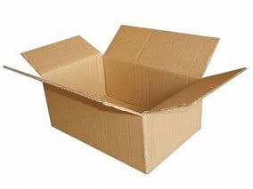
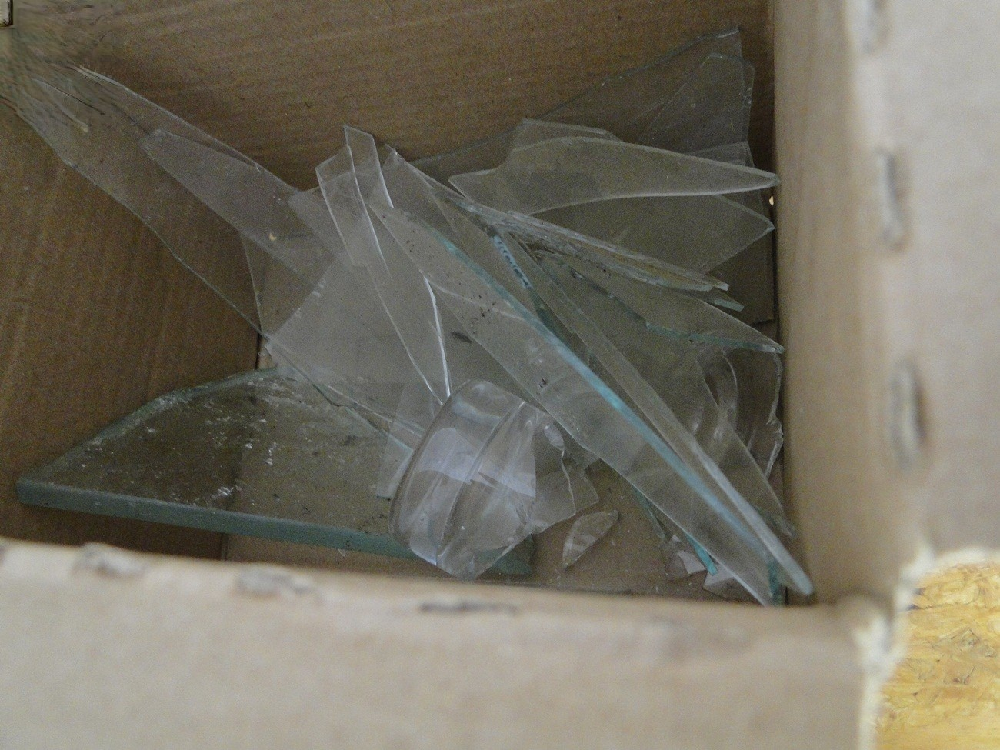
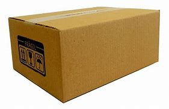

Separação do lixo é muito importante, separar o lixo orgânico, ou úmido, que são os restos de comida, papel higiênico, guardanapos e cascas de alimentos, poeira, etc.
O vidro em si existe um jeito certo de se jogar fora, pois se for descartado de qualquer jeito poderá machucar alguém como os garis que sofrem muito com isso, por isso separei 4 etapas para descartar corretamente o vidro:
1: Pegue alguma caixa, pode ser de papelão ou de leite;
2: Coloque o vidro na caixa;
3: Tampe a caixa (de preferência passe fita em volta);
4: Identifique caixa;

Seguindo esse 4 passos você finalmente poderá descartar o vidro para a coleta seletiva.